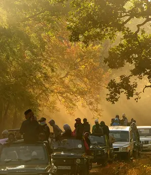
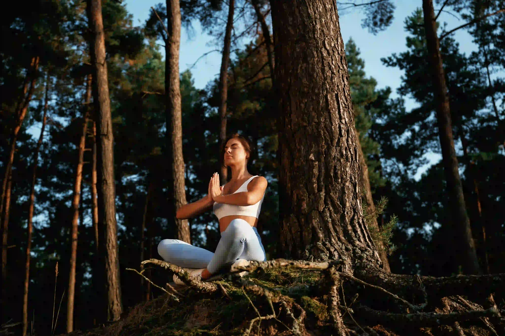
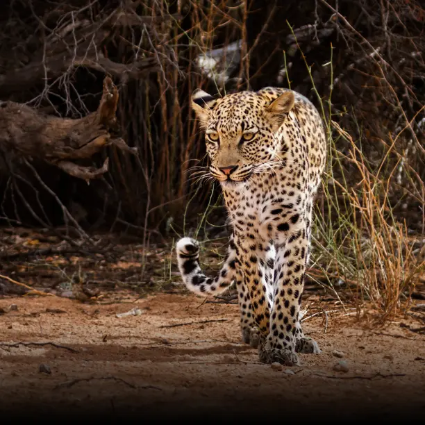
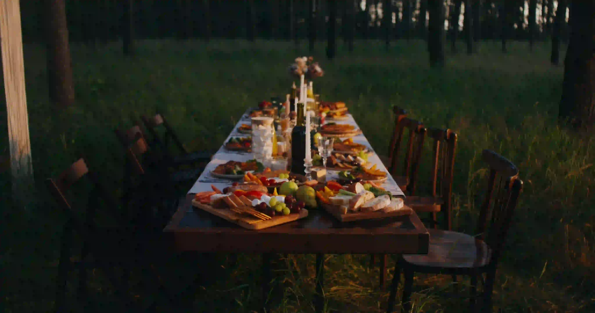
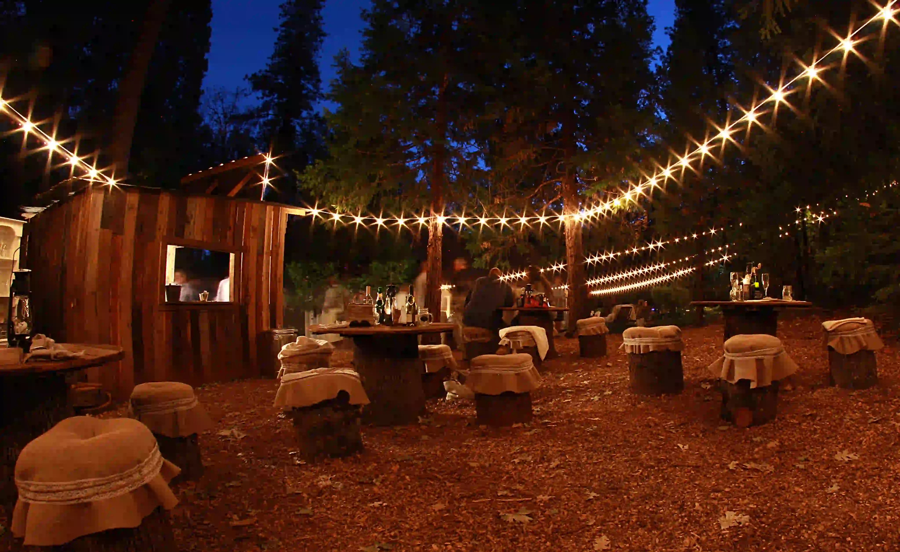
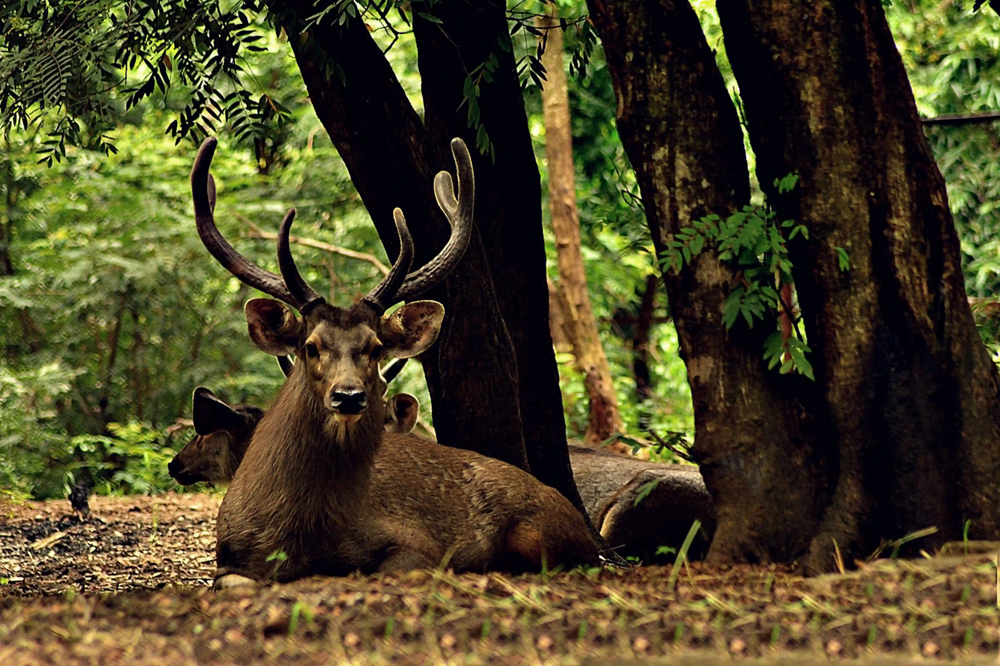
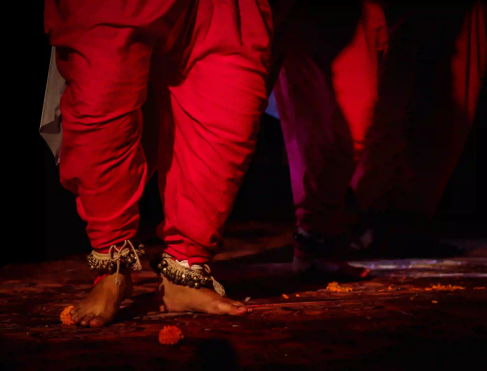
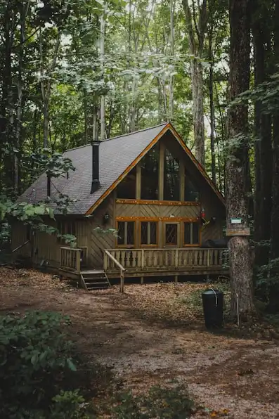
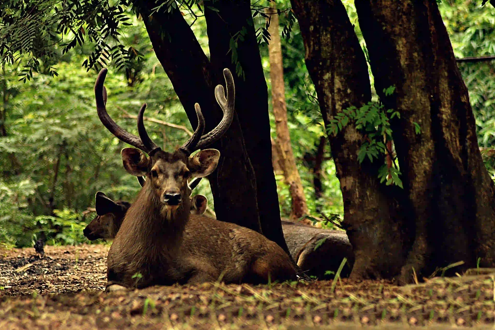

Not a dream (yet!)
(The Safari)Dear Diary,
Woke up at five, grumbled,
then saw a tiger cross the
track ten feet from our jeep.
I'm never sleeping in again.
♥ Aarav
Vol. IThe Safari
ex libris
Tales from the forest
Open a book, turn a page, and wander through the chapters our guests write in the wild.
ScrollSome places you visit. Others you read slowly, page by page, until the forest knows your name and you leave with a story you never planned to write.

Up before the birds, chai in hand, eyes on the tracks...

Lazy afternoon. Something big just slid into the water.

The leopard walked right past us. Nobody spoke for a minute.

Fireflies, owls calling, and one more story by the fire.

Notes from the jungle
Hover overTap a book to open it
Dear Diary,
Woke up at five, grumbled,
then saw a tiger cross the
track ten feet from our jeep.
I'm never sleeping in again.
♥ Aarav
Dear Mum,
We ate under a canopy of
lanterns and real stars.
The dal was better than
yours. Don't be cross :)
♥ Meera
To whoever stays next,
climb the fort at dusk.
Bring water, bring someone
you love, and leave your
phone in your pocket.
♥ Room 7
Keep scrolling to turn the pages
This journal belongs to
every traveller who
stayed a little longer
than they planned.
The road ends where the forest begins. Keys are handed over with a cup of something warm.
1Dawn drives, pugmarks in the dust, a deer frozen mid-step, then gone.
"Shh... look left."
3
Lanterns in the trees, food from the hearth, and stories told until the fire is just embers.
5The safari route
Pinned in the scrapbook



and so the book closes...